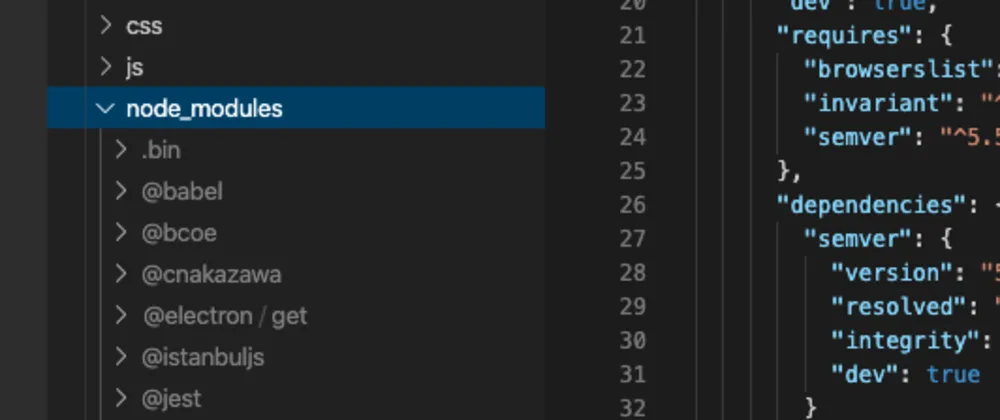
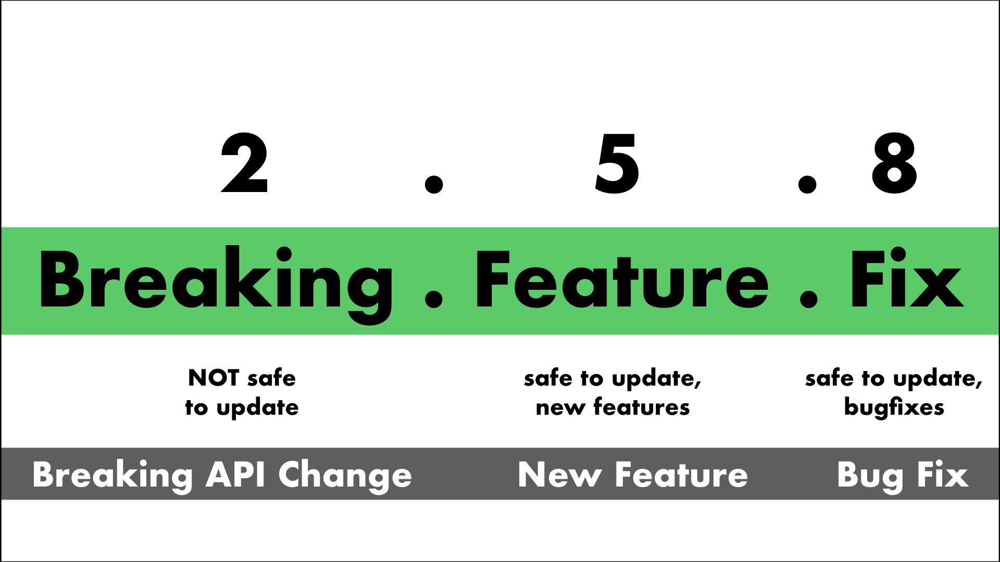

package.json explained by the Net Ninja
Node modules explained by the Net Ninja
All npm packages contain a file, usually in the project root, called package.json - this file holds various metadata relevant to the project. This file is used to give information to npm that allows it to identify the project as well as handle the project's dependencies. It can also contain other metadata such as a project description, the version of the project in a particular distribution, license information, even configuration data - all of which can be vital to both npm and to the end users of the package. The package.json file is normally located at the root directory of a Node.js project.
{
"name" : "underscore",
"description" : "JavaScript's functional programming helper library.",
"homepage" : "http://documentcloud.github.com/underscore/",
"keywords" : ["util", "functional", "server", "client", "browser"],
"author" : "Jeremy Ashkenas ",
"contributors" : [],
"dependencies" : [],
"repository" : {"type": "git", "url": "git://github.com/documentcloud/underscore.git"},
"main" : "underscore.js",
"version" : "1.1.6"
}

When creating a new Node project, the first thing we need to do is create a package.json
file with an empty JSON object { } inside. The dependencies field is used to list all the
dependencies of your project that are available on npm. When someone installs your project through npm,
all the dependencies listed will be installed as well. Additionally, if someone runs npm install in the
root directory of your project, it will install all the dependencies to ./node_modules.
We can manually write the dependencies into our package.json file:
{
"dependencies": {
"express": "^4.17.1",
"nodemon": "^2.0.7"
}
}

Packages in npm follow Semantic Versioning, also known as “semver”.
When you install a new package it will be added to your package.json with a semver version range.
These versions are broken down into major.minor.patch and looks like one of these:
3.14.1, 0.42.0, 2.7.18.
Each part of the version gets incremented at various times:
After we can run npm install on the terminal which will install all the dependencies to ./node_modules,
or we can simply have a package.json file with an empty JSON object { } inside and
use npm install <package_name> in the terminal which will install the latest version of the package ./node_modules
and also write that dependency in the package.json file. Example:
npm install express
It is also possible to add a "devDependencies" field to your package.json - these are dependencies
not required for normal operation, but required/recommended if you want to patch or modify the project.
If you built your unit tests using a testing framework, for example,
it would be appropriate to put the testing framework you used in your devDependencies field.
To install a project's devDependencies, simply pass the --dev option when you use npm install.
It's worth noting that the node_modules folder should always be an entry in the .gitignore file,
as it takes a tremendous amount of space. The dependencies can always be installed with the help ofpackage.json and npm install.
Node uses the core require module for managing module dependencies.
If we have a node_modules folder and an express.js module in there, the require('express') command will find it and we can work with it.
For example take a look at how we can use the express module after installing it:
const express = require("express");
const app = express();
First we fetch the module and store it in a constant, and then we instantiate it and it's ready to be used for our http requests.